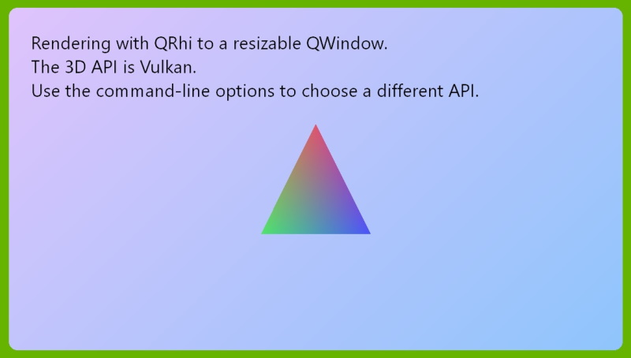

RHI Window Example
This example shows how to create a minimal QWindow-based application using QRhi.

Qt 6.6 starts offering its accelerated 3D API and shader abstraction layer for application use as well. Applications can now use the same 3D graphics classes Qt itself uses to implement the Qt Quick scenegraph or the Qt Quick 3D engine. In earlier Qt versions QRhi and the related classes were all private APIs. From 6.6 on these classes are in a similar category as QPA family of classes: neither fully public nor private, but something in-between, with a more limited compatibility promise compared to public APIs. On the other hand, QRhi and the related classes now come with full documentation similarly to public APIs.
There are multiple ways to use QRhi, the example here shows the most low-level approach: targeting a QWindow, while not using Qt Quick, Qt Quick 3D, or Widgets in any form, and setting up all the rendering and windowing infrastructure in the application.
In contrast, when writing a QML application with Qt Quick or Qt Quick 3D, and wanting to add QRhi-based rendering to it, such an application is going to rely on the window and rendering infrastructure Qt Quick has already initialized, and it is likely going to query an existing QRhi instance from the QQuickWindow. There dealing with QRhi::create(), platform/API specifics such as Vulkan instances, or correctly handling expose and resize events for the window are all managed by Qt Quick. Whereas in this example, all that is managed and taken care of by the application itself.
Note: For QWidget-based applications in particular, it should be noted that QWidget::createWindowContainer() allows embedding a QWindow (backed by a native window) into the widget-based user interface. Therefore, the HelloWindow class from this example is reusable in QWidget-based applications, assuming the necessary initialization from main() is in place as well.
3D API Support
The application supports all the current QRhi backends. When no command-line arguments are specified, platform-specific defaults are used: Direct 3D 11 on Windows, OpenGL on Linux, Metal on macOS/iOS.
Running with --help shows the available command-line options:
- -d or –d3d11 for Direct 3D 11
- -D or –d3d12 for Direct 3D 12
- -m or –metal for Metal
- -v or –vulkan for Vulkan
- -g or –opengl for OpenGL or OpenGL ES
- -n or –null for the Null backend
Build System Notes
This application relies solely on the Qt GUI module. It does not use Qt Widgets or Qt Quick.
In order to access the RHI APIs, which are available to all Qt applications but come with a limited compatibility promise, the target_link_libraries CMake command lists Qt6::GuiPrivate. This is what enables the #include <rhi/qrhi.h> include statement to compile successfully.
Features
The application features:
- A resizable QWindow,
- a swapchain and depth-stencil buffer that properly follows the size of the window,
- logic to initialize, render, and tear down at the appropriate time based on events such as QExposeEvent and QPlatformSurfaceEvent,
- rendering a fullscreen textured quad, using a texture the contents of which is generated in a QImage via QPainter (using the raster paint engine, i.e. the generating of the image's pixel data is all CPU-based, that data is then uploaded into a GPU texture),
- rendering a triangle with blending and depth testing enabled, using a perspective projection, while applying a model transform that changes on every frame,
- an efficient, cross-platform render loop using requestUpdate().
Shaders
The application uses two sets of vertex and fragment shader pairs:
- one for the fullscreen quad, which uses no vertex inputs and the fragment shader samples a texture (
quad.vert,quad.frag), - and another pair for the triangle, where vertex positions and colors are provided in a vertex buffer and a modelview-projection matrix is provided in a uniform buffer (
color.vert,color.frag).
The shaders are written as Vulkan-compatible GLSL source code.
Due to being a Qt GUI module example, this example cannot have a dependency on the Qt Shader Tools module. This means that CMake helper functions such as qt_add_shaders are not available for use. Therefore, the example has the pre-processed .qsb files included in the shaders/prebuilt folder, and they are simply included within the executable via qt_add_resources. This approach is not generally recommended for applications, consider rather using qt_add_shaders, which avoids the need to manually generate and manage the .qsb files.
To generate the .qsb files for this example, the command qsb --qt6 color.vert -o prebuilt/color.vert.qsb etc. was used. This leads to compiling to SPIR-V and than transpiling into GLSL (100 es and 120), HLSL (5.0), and MSL (1.2). All the shader versions are then packed together into a QShader and serialized to disk.
API-specific Initialization
For some of the 3D APIs the main() function has to perform the appropriate API-specific initialiation, e.g. to create a QVulkanInstance when using Vulkan. For OpenGL we have to ensure a depth buffer is available, this is done via QSurfaceFormat. These steps are not in the scope of QRhi since QRhi backends for OpenGL or Vulkan build on the existing Qt facilities such as QOpenGLContext or QVulkanInstance.
// For OpenGL, to ensure there is a depth/stencil buffer for the window.
// With other APIs this is under the application's control (QRhiRenderBuffer etc.)
// and so no special setup is needed for those.
QSurfaceFormat fmt;
fmt.setDepthBufferSize(24);
fmt.setStencilBufferSize(8);
// Special case macOS to allow using OpenGL there.
// (the default Metal is the recommended approach, though)
// gl_VertexID is a GLSL 130 feature, and so the default OpenGL 2.1 context
// we get on macOS is not sufficient.
#ifdef Q_OS_MACOS
fmt.setVersion(4, 1);
fmt.setProfile(QSurfaceFormat::CoreProfile);
#endif
QSurfaceFormat::setDefaultFormat(fmt);
// For Vulkan.
#if QT_CONFIG(vulkan)
QVulkanInstance inst;
if (graphicsApi == QRhi::Vulkan) {
// Request validation, if available. This is completely optional
// and has a performance impact, and should be avoided in production use.
inst.setLayers({ "VK_LAYER_KHRONOS_validation" });
// Play nice with QRhi.
inst.setExtensions(QRhiVulkanInitParams::preferredInstanceExtensions());
if (!inst.create()) {
qWarning("Failed to create Vulkan instance, switching to OpenGL");
graphicsApi = QRhi::OpenGLES2;
}
}
#endif
Note: For Vulkan, note how QRhiVulkanInitParams::preferredInstanceExtensions() is taken into account to ensure the appropriate extensions are enabled.
HelloWindow is a subclass of RhiWindow, which in turn is a QWindow. RhiWindow contains everything needed to manage a resizable window with a swapchain (and depth-stencil buffer), and is potentially reusable in other applications as well. HelloWindow contains the rendering logic specific to this particular example application.
In the QWindow subclass constructor the surface type is set based on the selected 3D API.
RhiWindow::RhiWindow(QRhi::Implementation graphicsApi) : m_graphicsApi(graphicsApi) { switch (graphicsApi) { case QRhi::OpenGLES2: setSurfaceType(OpenGLSurface); break; case QRhi::Vulkan: setSurfaceType(VulkanSurface); break; case QRhi::D3D11: case QRhi::D3D12: setSurfaceType(Direct3DSurface); break; case QRhi::Metal: setSurfaceType(MetalSurface); break; case QRhi::Null: break; // RasterSurface } }
Creating and initializing a QRhi object is implemented in RhiWindow::init(). Note that this is invoked only when the window is renderable, which is indicated by an expose event.
Depending on which 3D API we use, the appropriate InitParams struct needs to be passed to QRhi::create(). With OpenGL for example, a QOffscreenSurface (or some other QSurface) must be created by the application and provided for use to the QRhi. With Vulkan, a successfully initialized QVulkanInstance is required. Others, such as Direct 3D or Metal need no additional information to be able to initialize.
void RhiWindow::init() { if (m_graphicsApi == QRhi::Null) { QRhiNullInitParams params; m_rhi.reset(QRhi::create(QRhi::Null, ¶ms)); } #if QT_CONFIG(opengl) if (m_graphicsApi == QRhi::OpenGLES2) { m_fallbackSurface.reset(QRhiGles2InitParams::newFallbackSurface()); QRhiGles2InitParams params; params.fallbackSurface = m_fallbackSurface.get(); params.window = this; m_rhi.reset(QRhi::create(QRhi::OpenGLES2, ¶ms)); } #endif #if QT_CONFIG(vulkan) if (m_graphicsApi == QRhi::Vulkan) { QRhiVulkanInitParams params; params.inst = vulkanInstance(); params.window = this; m_rhi.reset(QRhi::create(QRhi::Vulkan, ¶ms)); } #endif #ifdef Q_OS_WIN if (m_graphicsApi == QRhi::D3D11) { QRhiD3D11InitParams params; // Enable the debug layer, if available. This is optional // and should be avoided in production builds. params.enableDebugLayer = true; m_rhi.reset(QRhi::create(QRhi::D3D11, ¶ms)); } else if (m_graphicsApi == QRhi::D3D12) { QRhiD3D12InitParams params; // Enable the debug layer, if available. This is optional // and should be avoided in production builds. params.enableDebugLayer = true; m_rhi.reset(QRhi::create(QRhi::D3D12, ¶ms)); } #endif #if defined(Q_OS_MACOS) || defined(Q_OS_IOS) if (m_graphicsApi == QRhi::Metal) { QRhiMetalInitParams params; m_rhi.reset(QRhi::create(QRhi::Metal, ¶ms)); } #endif if (!m_rhi) qFatal("Failed to create RHI backend");
Apart from this, everything else, all the rendering code, is fully cross-platform and has no branching or conditions specific to any of the 3D API.
Expose Events
What renderable exactly means is platform-specific. For example, on macOS a window that is fully obscured (fully behind some other window) is not renderable, whereas on Windows obscuring has no significance. Fortunately, the application needs no special knowledge about this: Qt's platform plugins abstract the differences behind the expose event. However, the exposeEvent() reimplementation also needs to be aware that an empty output size (e.g. width and height of 0) is also something that should be treated as a non-renderable situation. On Windows for example, this is what is going to happen when minimizing the window. Hence the check based on QRhiSwapChain::surfacePixelSize().
This implementation of expose event handling attempts to be robust, safe, and portable. Qt Quick itself also implements a very similar logic in its render loops.
void RhiWindow::exposeEvent(QExposeEvent *) { // initialize and start rendering when the window becomes usable for graphics purposes if (isExposed() && !m_initialized) { init(); resizeSwapChain(); m_initialized = true; } const QSize surfaceSize = m_hasSwapChain ? m_sc->surfacePixelSize() : QSize(); // stop pushing frames when not exposed (or size is 0) if ((!isExposed() || (m_hasSwapChain && surfaceSize.isEmpty())) && m_initialized && !m_notExposed) m_notExposed = true; // Continue when exposed again and the surface has a valid size. Note that // surfaceSize can be (0, 0) even though size() reports a valid one, hence // trusting surfacePixelSize() and not QWindow. if (isExposed() && m_initialized && m_notExposed && !surfaceSize.isEmpty()) { m_notExposed = false; m_newlyExposed = true; } // always render a frame on exposeEvent() (when exposed) in order to update // immediately on window resize. if (isExposed() && !surfaceSize.isEmpty()) render(); }
In RhiWindow::render(), which is invoked in response to the UpdateRequest event generated by requestUpdate(), the following check is in place, to prevent attempting to render when the swapchain initialization failed, or when the window became non-renderable.
void RhiWindow::render() { if (!m_hasSwapChain || m_notExposed) return;
Swapchain, Depth-Stencil buffer, and Resizing
To render to the QWindow, a QRhiSwapChain is needed. In addition, a QRhiRenderBuffer acting as the depth-stencil buffer is created as well since the application demonstrates how depth testing can be enabled in a graphics pipeline. With some legacy 3D APIs managing the depth/stencil buffer for a window is part of the corresponding windowing system interface API (EGL, WGL, GLX, etc., meaning the depth/stencil buffer is implicitly managed together with the window surface), whereas with modern APIs managing the depth-stencil buffer for a window-based render target is no different from offscreen render targets. QRhi abstracts this, but for best performance it still needs to be indicated that the QRhiRenderBuffer is used with together with a QRhiSwapChain.
The QRhiSwapChain is associated with the QWindow and the depth/stencil buffer.
std::unique_ptr<QRhiSwapChain> m_sc;
std::unique_ptr<QRhiRenderBuffer> m_ds;
std::unique_ptr<QRhiRenderPassDescriptor> m_rp;
m_sc.reset(m_rhi->newSwapChain());
m_ds.reset(m_rhi->newRenderBuffer(QRhiRenderBuffer::DepthStencil,
QSize(), // no need to set the size here, due to UsedWithSwapChainOnly
1,
QRhiRenderBuffer::UsedWithSwapChainOnly));
m_sc->setWindow(this);
m_sc->setDepthStencil(m_ds.get());
m_rp.reset(m_sc->newCompatibleRenderPassDescriptor());
m_sc->setRenderPassDescriptor(m_rp.get());
When the window size changes, the swapchain needs to be resized as well. This is implemented in resizeSwapChain().
void RhiWindow::resizeSwapChain() { m_hasSwapChain = m_sc->createOrResize(); // also handles m_ds const QSize outputSize = m_sc->currentPixelSize(); m_viewProjection = m_rhi->clipSpaceCorrMatrix(); m_viewProjection.perspective(45.0f, outputSize.width() / (float) outputSize.height(), 0.01f, 1000.0f); m_viewProjection.translate(0, 0, -4); }
Unlike other QRhiResource subclasses, QRhiSwapChain features slightly different semantics when it comes to its create-function. As the name, createOrResize(), suggests, this needs to be called whenever it is known that the output window size may be out of sync with what the swapchain was last initialized. The associated QRhiRenderBuffer for depth-stencil gets its size set automatically, and create() is called on it implicitly from the swapchain's createOrResize().
This is also a convenient place to (re)calculate the projection and view matrices since the perspective projection we set up depends on the output aspect ratio.
Note: To eliminate coordinate system differences, the a backend/API-specific "correction" matrix is queried from QRhi and baked in to the projection matrix. This is what allows the application to work with OpenGL-style vertex data, assuming a coordinate system with the origin at the bottom-left.
The resizeSwapChain() function is called from RhiWindow::render() when it is discovered that the currently reported size is not the same anymore as what the swapchain was last initialized with.
See QRhiSwapChain::currentPixelSize() and QRhiSwapChain::surfacePixelSize() for further details.
High DPI support is built-in: the sizes, as the naming indicates, are always in pixels, taking the window-specific scale factor into account. On the QRhi (and 3D API) level there is no concept of high DPI scaling, everything is always in pixels. This means that a QWindow with a size() of 1280x720 and a devicePixelRatio() of 2 is a render target (swapchain) with a (pixel) size of 2560x1440.
// If the window got resized or newly exposed, resize the swapchain. (the
// newly-exposed case is not actually required by some platforms, but is
// here for robustness and portability)
//
// This (exposeEvent + the logic here) is the only safe way to perform
// resize handling. Note the usage of the RHI's surfacePixelSize(), and
// never QWindow::size(). (the two may or may not be the same under the hood,
// depending on the backend and platform)
//
if (m_sc->currentPixelSize() != m_sc->surfacePixelSize() || m_newlyExposed) {
resizeSwapChain();
if (!m_hasSwapChain)
return;
m_newlyExposed = false;
}
Render Loop
The application renders continuously, throttled by the presentation rate (vsync). This is ensured by calling requestUpdate() from RhiWindow::render() when the currently recorded frame has been submitted.
m_rhi->endFrame(m_sc.get());
// Always request the next frame via requestUpdate(). On some platforms this is backed
// by a platform-specific solution, e.g. CVDisplayLink on macOS, which is potentially
// more efficient than a timer, queued metacalls, etc.
requestUpdate();
}
This eventually leads to getting a UpdateRequest event. This is handled in the reimplementation of event().
bool RhiWindow::event(QEvent *e) { switch (e->type()) { case QEvent::UpdateRequest: render(); break; case QEvent::PlatformSurface: // this is the proper time to tear down the swapchain (while the native window and surface are still around) if (static_cast<QPlatformSurfaceEvent *>(e)->surfaceEventType() == QPlatformSurfaceEvent::SurfaceAboutToBeDestroyed) releaseSwapChain(); break; default: break; } return QWindow::event(e); }
Resource and Pipeline Setup
The application records a single render pass that issues two draw calls, with two different graphics pipelines. One is the "background", with the texture containing the QPainter-generated image, then a single triangle is rendered on top with blending enabled.
The vertex and uniform buffer used with the triangle is created like this. The size of the uniform buffer is 68 bytes since the shader specific a mat4 and a float member in the uniform block. Watch out for the std140 layout rules. This presents no surprises in this example since the float member that follows the mat4 has the correct alignment without any additional padding, but it may become relevant in other applications, especially when working with types such as vec2 or vec3. When in doubt, consider checking the QShaderDescription for the QShader, or, what is often more convenient, run the qsb tool on the .qsb file with the -d argument to inspect the metadata in human-readable form. The printed information includes, among other things, the uniform block member offsets, sizes, and the total size in bytes of each uniform block.
void HelloWindow::customInit() { m_initialUpdates = m_rhi->nextResourceUpdateBatch(); m_vbuf.reset(m_rhi->newBuffer(QRhiBuffer::Immutable, QRhiBuffer::VertexBuffer, sizeof(vertexData))); m_vbuf->create(); m_initialUpdates->uploadStaticBuffer(m_vbuf.get(), vertexData); static const quint32 UBUF_SIZE = 68; m_ubuf.reset(m_rhi->newBuffer(QRhiBuffer::Dynamic, QRhiBuffer::UniformBuffer, UBUF_SIZE)); m_ubuf->create();
The vertex and fragment shaders both need a uniform buffer at binding point 0. This is ensured by the QRhiShaderResourceBindings object. The graphics pipeline is then setup with the shaders and a number of additional information. The example also relies on a number of convenient defaults, e.g. the primitive topology is Triangles, but that is the default, and therefore it is not explicitly set. See QRhiGraphicsPipeline for further details.
In addition to specifying the topology and various state, the pipeline must also be associated with:
- The vertex input layout in form of a QRhiVertexInputLayout. This specifies the type and component count for each vertex input location, the total stride in bytes per vertex, and other related data. QRhiVertexInputLayout only holds data, not actual native resources, and is copiable.
- A valid and successfully initialized QRhiShaderResourceBindings object. This describes the layout of the resource bindings (uniform buffers, textures, samplers) the shaders expect. This must either by the QRhiShaderResourceBindings used when recording the draw calls, or another that is layout-compatible with it. This simple application takes the former approach.
- A valid QRhiRenderPassDescriptor object. This must be retrieved from, or be compatible with the render target. The example uses the former, by creating a QRhiRenderPassDescriptor object via QRhiSwapChain::newCompatibleRenderPassDescriptor().
m_colorTriSrb.reset(m_rhi->newShaderResourceBindings());
static const QRhiShaderResourceBinding::StageFlags visibility =
QRhiShaderResourceBinding::VertexStage | QRhiShaderResourceBinding::FragmentStage;
m_colorTriSrb->setBindings({
QRhiShaderResourceBinding::uniformBuffer(0, visibility, m_ubuf.get())
});
m_colorTriSrb->create();
m_colorPipeline.reset(m_rhi->newGraphicsPipeline());
// Enable depth testing; not quite needed for a simple triangle, but we
// have a depth-stencil buffer so why not.
m_colorPipeline->setDepthTest(true);
m_colorPipeline->setDepthWrite(true);
// Blend factors default to One, OneOneMinusSrcAlpha, which is convenient.
QRhiGraphicsPipeline::TargetBlend premulAlphaBlend;
premulAlphaBlend.enable = true;
m_colorPipeline->setTargetBlends({ premulAlphaBlend });
m_colorPipeline->setShaderStages({
{ QRhiShaderStage::Vertex, getShader(QLatin1String(":/color.vert.qsb")) },
{ QRhiShaderStage::Fragment, getShader(QLatin1String(":/color.frag.qsb")) }
});
QRhiVertexInputLayout inputLayout;
inputLayout.setBindings({
{ 5 * sizeof(float) }
});
inputLayout.setAttributes({
{ 0, 0, QRhiVertexInputAttribute::Float2, 0 },
{ 0, 1, QRhiVertexInputAttribute::Float3, 2 * sizeof(float) }
});
m_colorPipeline->setVertexInputLayout(inputLayout);
m_colorPipeline->setShaderResourceBindings(m_colorTriSrb.get());
m_colorPipeline->setRenderPassDescriptor(m_rp.get());
m_colorPipeline->create();
getShader() is a helper function that loads a .qsb file and deserializes a QShader from it.
static QShader getShader(const QString &name) { QFile f(name); if (f.open(QIODevice::ReadOnly)) return QShader::fromSerialized(f.readAll()); return QShader(); }
The color.vert shader specifies the following as the vertex inputs:
layout(location = 0) in vec4 position; layout(location = 1) in vec3 color;
The C++ code however provides vertex data as 2 floats for position, with 3 floats for the color interleaved. (x, y, r, g, b for each vertex) This is why the stride is 5 * sizeof(float) and the inputs for locations 0 and 1 are specified as Float2 and Float3, respectively. This is valid, and the z and w of the vec4 position will get set automatically.
Rendering
Recording a frame is started by calling QRhi::beginFrame() and finished by calling QRhi::endFrame().
QRhi::FrameOpResult result = m_rhi->beginFrame(m_sc.get());
if (result == QRhi::FrameOpSwapChainOutOfDate) {
resizeSwapChain();
if (!m_hasSwapChain)
return;
result = m_rhi->beginFrame(m_sc.get());
}
if (result != QRhi::FrameOpSuccess) {
qWarning("beginFrame failed with %d, will retry", result);
requestUpdate();
return;
}
customRender();
Some of the resources (buffers, textures) have static data in the application, meaning the content never changes. The vertex buffer's content is provided in the initialization step for example, and is not changed afterwards. These data update operations are recorded in m_initialUpdates. When not yet done, the commands on this resource update batch are merged into the per-frame batch.
void HelloWindow::customRender() { QRhiResourceUpdateBatch *resourceUpdates = m_rhi->nextResourceUpdateBatch(); if (m_initialUpdates) { resourceUpdates->merge(m_initialUpdates); m_initialUpdates->release(); m_initialUpdates = nullptr; }
Having a per-frame resource update batch is necessary since the uniform buffer contents with the modelview-projection matrix and the opacity changes on every frame.
m_rotation += 1.0f;
QMatrix4x4 modelViewProjection = m_viewProjection;
modelViewProjection.rotate(m_rotation, 0, 1, 0);
resourceUpdates->updateDynamicBuffer(m_ubuf.get(), 0, 64, modelViewProjection.constData());
m_opacity += m_opacityDir * 0.005f;
if (m_opacity < 0.0f || m_opacity > 1.0f) {
m_opacityDir *= -1;
m_opacity = qBound(0.0f, m_opacity, 1.0f);
}
resourceUpdates->updateDynamicBuffer(m_ubuf.get(), 64, 4, &m_opacity);
To begin recording the render pass, a QRhiCommandBuffer is queried, and the output size is determined, which will be useful for setting up the viewport and resizing our fullscreen texture, if needed.
QRhiCommandBuffer *cb = m_sc->currentFrameCommandBuffer();
const QSize outputSizeInPixels = m_sc->currentPixelSize();
Starting a render pass implies clearing the render target's color and depth-stencil buffers (unless the render target flags indicate otherwise, but that is only an option for texture-based render targets). Here we specify black for color, 1.0f for depth, and 0 for stencil (unused). The last argument, resourceUpdates, is what ensures that the data update commands recorded on the batch get committed. Alternatively, we could have used QRhiCommandBuffer::resourceUpdate() instead. The render pass targets a swapchain, hence calling currentFrameRenderTarget() to get a valid QRhiRenderTarget.
cb->beginPass(m_sc->currentFrameRenderTarget(), Qt::black, { 1.0f, 0 }, resourceUpdates);
Recording the draw call for the triangle is straightforward: set the pipeline, set the shader resources, set the vertex/index buffer(s), and record the draw call. Here we use a non-indexed draw with just 3 vertices.
cb->setGraphicsPipeline(m_colorPipeline.get());
cb->setShaderResources();
const QRhiCommandBuffer::VertexInput vbufBinding(m_vbuf.get(), 0);
cb->setVertexInput(0, 1, &vbufBinding);
cb->draw(3);
cb->endPass();
The setShaderResources() call has no arguments given, which implies using m_colorTriSrb since that was associated with the active QRhiGraphicsPipeline (m_colorPipeline).
We will not dive into the details of the rendering of the fullscreen background image. See the example source code for that. It is however worth noting a common pattern for "resizing" a texture or buffer resource. There is no such thing as changing the size of an existing native resource, so changing a texture or buffer size must be followed by a call to create(), to release and recreate the underlying native resources. To ensure that the QRhiTexture always has the required size, the application implements the following logic. Note that m_texture stays valid for the entire lifetime of the window, which means object references to it, e.g. in a QRhiShaderResourceBindings, continue to be valid all the time. It is only the underlying native resources that come and go over time.
void HelloWindow::ensureFullscreenTexture(const QSize &pixelSize, QRhiResourceUpdateBatch *u) { if (m_texture && m_texture->pixelSize() == pixelSize) return; if (!m_texture) m_texture.reset(m_rhi->newTexture(QRhiTexture::RGBA8, pixelSize)); else m_texture->setPixelSize(pixelSize); m_texture->create(); QImage image(pixelSize, QImage::Format_RGBA8888_Premultiplied);
Once a QImage is generated and the QPainter-based drawing into it has finished, we use uploadTexture() to record a texture upload on the resource update batch:
u->uploadTexture(m_texture.get(), image);
See also QRhi, QRhiSwapChain, QWindow, QRhiCommandBuffer, QRhiResourceUpdateBatch, QRhiBuffer, and QRhiTexture.